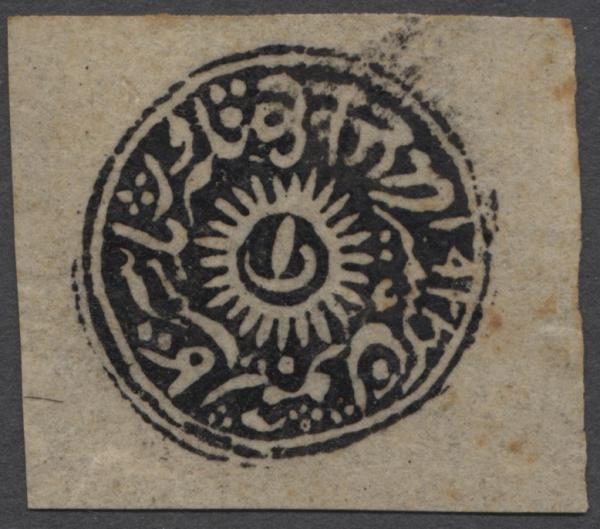
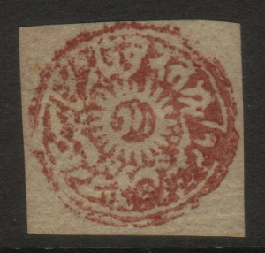
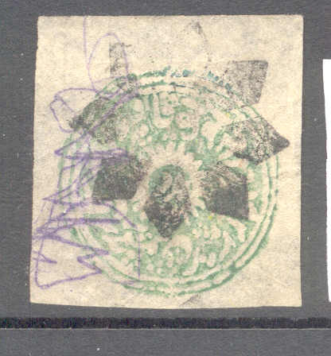
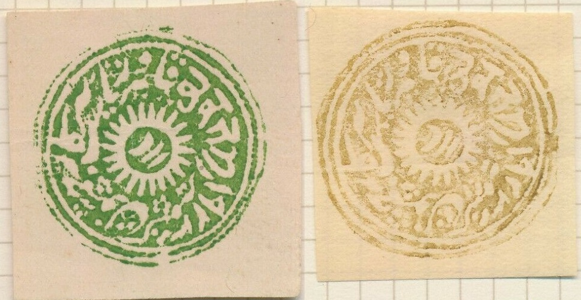
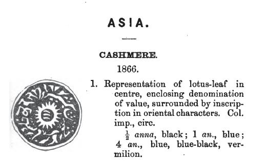
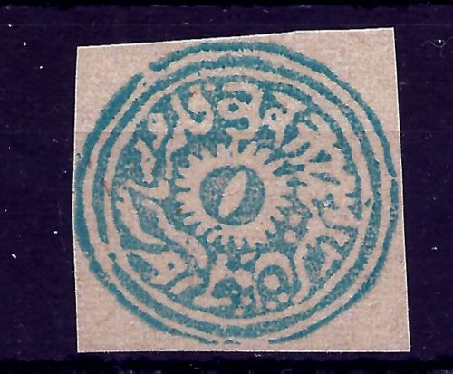

{kind=link}


Jammu and Cashmir - Jummo et Cachemire
Return To Catalogue - India - Jammu and Kashmir 1866, 'old rectangular' issues - Jammu and Kashmir 1878, 'new rectangular' issues
Note: on my website many of the
pictures can not be seen! They are of course present in the
catalogue;
contact me if you want to purchase it.
Many forgeries exist: see http://www.kashmirstamps.ca/MassonVII.html much information can be found. Also http://www.kashmirstamps.com/index.html. Also very dangerous forgeries are known to exist.
(Reduced views)
1/2 a black 1/2 a red (1869) 1/2 a blue (1876) 1/2 a green (1876) 1/2 a yellow (1876) 1 a black 1 a red (1869) 1 a blue 1 a green (1876) 1 a yellow (1876) 4 a black 4 a blue 4 a red (1869) 4 a green (1876) 4 a yellow (1876)
The 1/2 a stamps have three more or less parallel lines in the central design. The 1 a has a straigth line with a curved line at the bottom. The 4 a stamp has a single line in the centre. Specialists distinguish between watercolors and oilcolors. These stamps were handstamped and are thus usually very crudely executed. Different kinds of papers were used (native papers are the rarest) and both water based ink (not water resistent!) and oil based ink were used. Stamps used in Srinagar (Kashmir) have red cancels.
Value of the stamps |
|||
vc = very common c = common * = not so common ** = uncommon |
*** = very uncommon R = rare RR = very rare RRR = extremely rare |
||
| Value | Unused | Used | Remarks |
| 1/2 a black | *** | *** | |
| 1/2 a red | R | R | |
| 1/2 a blue | R | R | |
| 1/2 a green | R | R | |
| 1/2 a yellow | RR | RR | |
| 1 a black | R | R | |
| 1 a red | R | R | |
| 1 a blue | R | R | |
| 1 a green | R | R | |
| 1 a yellow | RR | RR | |
| 4 a black | R | R | |
| 4 a red | R | R | |
| 4 a blue | *** | R | |
| 4 a green | R | R | |
| 4 a yellow | RR | RR | |
There seems to have been some confusion about the 1 a and 4 a values, which were initially attributed to the wrong stamps in earlier catalogues.
Sheet with 1/2 a black stamps (image obtained from a Feldman
auction)
I have seen forgeries of these stamps, printed from the
original die. They are different from the so-called Brighton
forgeries made by Harold Treherne from
1902 to 1907. These forgeries are rather deceptive. See also
http://www.sspak.com/library/India/Jammu%20&%20Kashmir%20Forgeries.pdf.
The site http://www.kashmirstamps.ca/SMcontents.html contains
valuable information about these stamps. It is an (improved?)
online version of the book 'The Stamps of Jammu-Kashmir'
by Alexander Séfi & C.H. Mortimer (1937). Publisher: Séfi,
Pemberton & Co., Ltd., 12 South Molton Street, W.1. London.
322 pp, 59 black & white plates. The forgeries described are
the so-called 'Die I' forgeries (longtime believed to be the
genuine stamps!) and 'Missing Die' forgeries.
'Missing Die' forgeries, believed to be from a 'missing die' that could not be found in the archive, it later turned out to be forgeries.
'Missing Die' forgery of the 4 a on the left. The central line
points to the symbol above it in the forgeries. In the genuine
stamps, it points in between two values.

'Missing die' forgery of the 1/2 a value, the three strokes in
the center should not touch the white 'sun' in the genuine
stamps. In the 'Missing Die' forgeries it does. See also
https://www.stampboards.com/viewtopic.php?f=33&t=39738.
'Missing Die' forgery of the 1 a value.

Highly dubious stamps, the cancel looks like the one that the
stamp forger Oneglia sometimes used on his forgeries.
I've also heard of reprints made about 1880, which are printed much better than the originals (the originals are usually smudgy).

I've been told that these are 1880 reprints.
Reprints from the original plates
Two other forgeries.
A set of forgeries with the same cancel. The last two are in
'mirror-image'. See also http://www.kashmirstamps.com/FKash.html.

According to
http://www.stampboards.com/viewtopic.php?f=13&t=13744&start=50,
stamps with this kind of cancel are always forgeries. Normal
cancels are overinked and unclear (they resemble more like
coloured blobs).

A whole bunch of forgeries of different states, all made by the
same forger, I presume. The Jammu and Kasmir forgery is at the
bottom left. I've seen exactly the same forgery in the color
green as well. The second item in the bottom row is also supposed
to be from Jammy and Kasmir (a Jammu iron-mine seal copied from a
Stanley Gibbons catalogue); this seal was temporary used as a
stamp (extremely rare), it is usually a 'cancel' in black.
Millions of these forgeries were dumped in the market in the
1980's-90's.

The same forgery as in the above collection. The circular frame
imperfections are always identical for each value. These are most
likely modern forgeries printed in
the 1980's. They were printed in red, purple, green, black, blue
and yellow.
Some kind of reprints or forgeries.
For Jammu and Kashmir 1866, 'old rectangular' issues, click here or Jammu and Kashmir 1878, 'new rectangular' issues, click here.
'The Stamps of Jammu & Kashmir' by Frits Staal, 1983 (286 pages); covers history, stamps, postal stationary, essays, proofs, reprints and forgeries, telegraphs, fiscals and postmarks. I haven't read this book myself.
Stamps - Timbres-Poste - Briefmarken
{kind=link}
{kind=link}
{kind=link}
{kind=link}
{kind=link}
{kind=link}